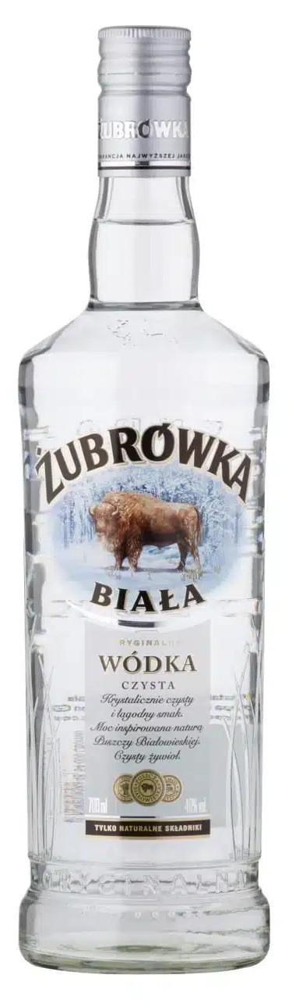

Wódka!
Wódka – wysokoprocentowy napój alkoholowy uzyskiwany przez zmieszanie w odpowiednich proporcjach spirytusu rektyfikowanego z wodą. Może mieć charakter czysty, bez dodatków lub smakowy. Zawartość alkoholu etylowego w wódce wynosi nie mniej niż 37,5% obj., zwykle 40% obj. Surowcami do produkcji wódek są produkty pochodzenia rolniczego, tradycyjnie zboża lub ziemniaki.
W szerszym sensie, zwłaszcza historycznym, wódkami określa się napoje alkoholowe uzyskiwane na bazie destylowanego alkoholu pozyskanego z przerobu płodów rolnych.
Do etapów produkcji wódki należy na ogół oczyszczenie surowców, parowanie mające na celu upłynnienie skrobi zawartej w surowcach, zacieranie, czyli rozkład skrobi do cukrów, fermentacja cukrów przeprowadzana przez drożdże, destylacja, rektyfikacja, mieszanie powstałego spirytusu z wodą, filtracja i rozlew.
Wódka stanowi istotny element kultury, zwłaszcza w krajach tzw. pasa wódki, w tym Polski i Rosji – państwach, które rywalizują o miano jej ojczyzny. Z jednej strony pojawia się w dawnych i współczesnych obrzędach, tradycjach, utworach literackich; jej różnorodność, sposób produkcji i spożycia stanowi pewne dziedzictwo kulturowe. Z drugiej strony jej konsumpcja jest związana z negatywnymi zjawiskami społecznymi jak pijaństwo i alkoholizm.
Słowo wódka pochodzi od słowa woda i w przeszłości miała wiele znaczeń, była m.in. nazwą kosmetyku (wódka do twarzy, wódka kolońska), środka leczniczego (wódka do płukania gardła, wódka serdeczna, kordiał → lek nasercowy), osoby, „co tylko wodę pija”, czyli abstynenta.
Pierwszy zachowany zapis słowa wódka pochodzi z okresu średniowiecza. Odnotowany został w 1405 r. w kronikach sądu ziemskiego w Sandomierzu w dokumencie o zakupie ziemi spisanym w języku łacińskim z użyciem języka staropolskiego. Słownik staropolski cytuje zapis w formie (...) per aquam vlg. wodco, a po modzidlo (pro moczidlo) co oznacza mały zbiornik wodny, staw, a więc termin pierwotnie używano w znaczeniu hydrologicznym.